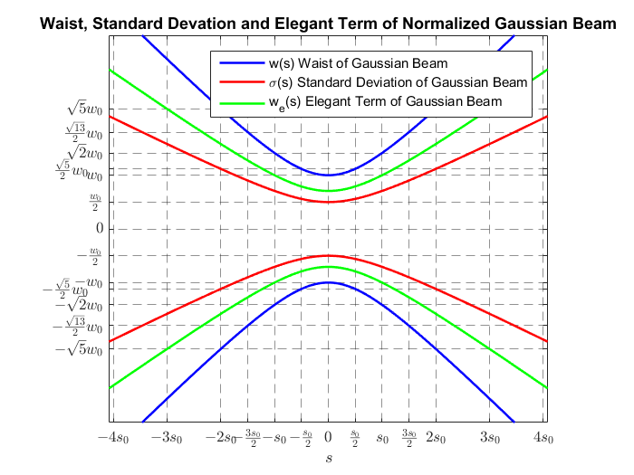
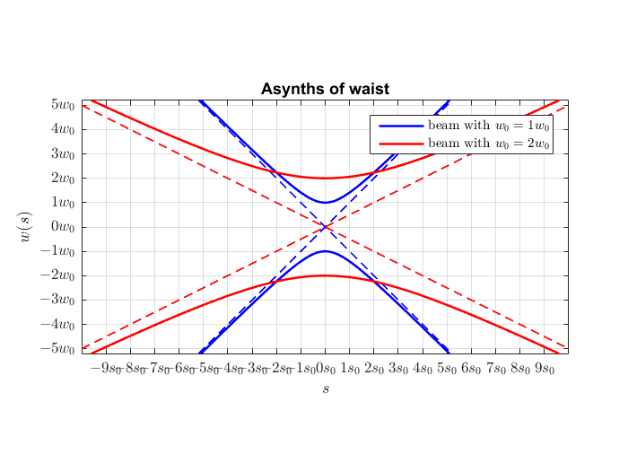
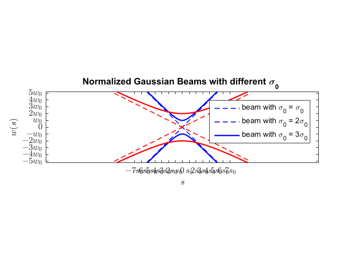
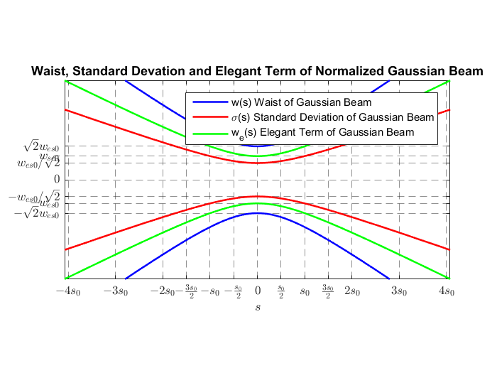

This script generates plots of Normalized Gaussian Beams Parameters
For this we have used different ways of normalization.
Contents
Initial parameters
% Diffent definitions of "waist" of Gaussian Beams wo = 1; % Initial normalized standard waist of Gaussian Beam. sigmao = 2*wo; % Initial normalized deviation of Gaussian Beam. weo = wo/sqrt(2); % Initial normalized elegant waist of Gaussian Beam. % Normalized distance of Rayleigh so = wo^2; % Quantities for generate vector in s direction Ns = 2^9; % Number of points of vector ns = -Ns/2:Ns/2-1; % Index vector with 1 of resolution timesso = 12; % Number of times so Ds = timesso*so; % Size of vector's window ds = Ds/Ns; % Resolution of vector s = ns.*ds; % Vector
Normalized Radius of Curvature of Guassian Beams
set(groot,'defaultAxesTickLabelInterpreter','latex'); % Using latex in labels. %Plot Normalized Radius of Curvature and Normalized Elegant Radius of Curvature figure(1) plot(s,radiusGaussianBeam(s,wo),'LineWidth',1.5) % Normalized Radius of Curvature. hold on plot(s,elegantRadiusGaussianBeam(s,wo),'LineWidth',1.5) % Normalized Elegant Radius of Curvature. hold off xlabel('$s$','Interpreter','latex') ylabel('$R(s)$','Interpreter','latex') title('Radius of Curvature of Normalized Gaussian Beam') %generate x-ticks in terms of so nrticksx = timesso+1; % Number of ticks symetric of 0. xticksv = zeros(1,nrticksx); % Vector for values in ticks. xticklabelsv = cell(1,nrticksx); % Cell for strings of labels in ticks. %cycle for how many times of so for ii = 1:nrticksx xticksv(ii) = (ii-floor(nrticksx/2)-1)*so; % How many times of so. if ( xticksv(ii) == 0) % If x is zero only put 0 in xlabel. xticklabelsv{ii} = 0; else % Else It takes value of times so. xticklabelsv{ii} = [num2str(xticksv(ii)),'$s_0$']; end end set(gca,'xtick',xticksv); % Set values of ticks. set(gca,'xticklabel',xticklabelsv) % Set labels in ticks. xlim([-1.05*Ds/2 1.05*Ds/2]) % Limit axes %generate y-ticks in terms of so nrticksy = timesso+1; % Number of ticks symetric of 0. yticksv = zeros(1,nrticksx); % Vector for values in ticks. yticklabelsv = cell(1,nrticksx); % Cell for strings of labels in ticks. %cycle for how many times of so is evaluated in Radius functions for jj =1:nrticksy yticksv(jj) = radiusGaussianBeam((jj-floor(nrticksx/2)-1)*so,wo); % How many times of so evalued in Radius. if (isnan(yticksv(jj)) == 1) % If y is nan only put 0 in ylabel yticksv(jj) = 0; yticklabelsv{jj} = 0; else yticklabelsv{jj} = [num2str(rats(yticksv(jj))),' $s_0$']; % Else It takes value of times so in Radius. end end set(gca,'ytick',yticksv); % Set values of ticks. set(gca,'yticklabel',yticklabelsv) % Set labels in ticks. ylim([1.05*radiusGaussianBeam(-(timesso/2)*so,wo) ... % Limit axes ,1.05*radiusGaussianBeam( (timesso/2)*so,wo)]) grid leg = legend({'$R(s)$','$R_e(s)$'},'Interpreter','latex'); % Legends leg.Position = [0.6326 0.4531 0.1514 0.0978]; % Change position of legends daspect([1 1 1]) % relation aspect 1:1 in axes

Normalized Waist, Elegant Waist and Sigma of Gaussian Beams
%Plot different waist of Gaussian Beams figure(2) plot(s,waistGaussianBeam(s,wo),'b','LineWidth',1.5) hold on plot(s,sigmaGaussianBeam(s,wo),'r','LineWidth',1.5) plot(s,elegantWaistGaussianBeam(s,wo),'g','LineWidth',1.5) plot(s,-waistGaussianBeam(s,wo),'b','LineWidth',1.5) plot(s,-sigmaGaussianBeam(s,wo),'r','LineWidth',1.5) plot(s,-elegantWaistGaussianBeam(s,wo),'g','LineWidth',1.5) hold off xlabel('$s$','Interpreter','latex') %%ylabel('$w(s)$','Interpreter','latex') xticksv =[-4*so,-3*so,-2*so,-3*so/2,-so,-so/2,0,so/2,so,3*so/2,2*so,3*so,4*so]; xticklabelsv={'$-4s_0$','$-3s_0$','$-2s_0$','$-\frac{3s_0}{2}$','$-s_0$','$-\frac{s_0}{2}$','$0$','$\frac{s_0}{2}$','$s_0$','$\frac{3s_0}{2}$','$2s_0$','$3s_0$','$4s_0$'}; set(gca,'xtick',xticksv); set(gca,'xticklabel',xticklabelsv) yticksv =[-waistGaussianBeam(2*so,wo),-waistGaussianBeam(3*so/2,wo),-waistGaussianBeam(so,wo), -waistGaussianBeam(so/2,wo),- waistGaussianBeam(0,wo),-wo/2,0,... wo/2, waistGaussianBeam(0,wo), waistGaussianBeam(so/2,wo), waistGaussianBeam(so,wo),waistGaussianBeam(3*so/2,wo),waistGaussianBeam(2*so,wo)]; yticklabelsv={'$-\sqrt{5}w_0$','$-\frac{\sqrt{13}}{2}w_0$','$-\sqrt{2}w_0$','$-\frac{\sqrt{5}}{2}w_0\quad$','$-w_0$','$-\frac{w_0}{2}$','$0$'... '$\frac{w_0}{2}$','$w_0$','$\frac{\sqrt{5}}{2}w_0\quad$','$\sqrt{2}w_0$','$\frac{\sqrt{13}}{2}w_0$','$\sqrt{5}w_0$'}; set(gca,'ytick',yticksv); set(gca,'yticklabel',yticklabelsv) title('Waist, Standard Devation and Elegant Term of Normalized Gaussian Beam') xlim([-1.02*4*so 1.02*4*so]) ylim([-1.02*sigmaGaussianBeam(7*so,wo) 1.02*sigmaGaussianBeam(7*so,wo)]) daspect([1 1 1]) grid ax=gca; ax.GridLineStyle = '--'; ax.GridAlpha = 0.5; legend('w(s) Waist of Gaussian Beam','\sigma(s) Standard Deviation of Gaussian Beam','w_e(s) Elegant Term of Gaussian Beam')
Slopes Normalized Waist, Elegant Waist and Sigma of Gaussian Beams
Ns = 2^9; % number of points ns = -Ns/2:Ns/2-1; % index vector with 1 of resolution %%vector s Ds = 20*so; % size of window of vector ds = Ds/Ns; % resolution of vector s = ns.*ds; % vector Colors = {'b','r','g'}; numberofplots = 2; legendplot = {}; K =1:1:numberofplots; figure(3) plots = {}; for jj = K plot(s,s*(1/(jj*wo)),['--',Colors{jj}],'LineWidth',1) hold on plot(s,-s*(1/(jj*wo)),['--',Colors{jj}],'LineWidth',1) plots{jj}=plot(s, waistGaussianBeam(s,jj*wo),Colors{jj},'LineWidth',1.5); plot(s,-waistGaussianBeam(s,jj*wo),Colors{jj},'LineWidth',1.5) legendplot{jj} = ['beam with $w_0=',num2str(jj),'w_0$']; end hold off legend([plots{:}],legendplot,'Interpreter','latex') xlabel('$s$','Interpreter','latex') ylabel('$w(s)$','Interpreter','latex') title('Asynths of waist') %ticks nrticksx = 19; xticksv = zeros(1,nrticksx); xticklabelsv = {}; for ii = 1:nrticksx xticksv(ii) = (ii-floor(nrticksx/2)-1)*so; xticklabelsv{ii} = ['$',num2str(ii-floor(nrticksx/2)-1),'s_0$']; end set(gca,'xtick',xticksv); set(gca,'xticklabel',xticklabelsv) nrticksy = 11; yticksv = zeros(1,nrticksy); yticklabelsv = {}; for ii = 1:nrticksy yticksv(ii) = waistGaussianBeam(0,(ii-floor(nrticksy/2)-1)*wo); yticklabelsv{ii} = ['$',num2str(ii-floor(nrticksy/2)-1),'w_0$']; end yticksv(isnan(yticksv))=0; set(gca,'ytick',yticksv); set(gca,'yticklabel',yticklabelsv) grid ylim([-1.02*waistGaussianBeam(5*so,wo) 1.02*waistGaussianBeam(5*so,wo)]) xlim([-10*so 10*so]) daspect([1 1 1])
% % plot(s,waistGaussianBeam(s,wo),'b','LineWidth',1.5) % hold on % plot(s,waistGaussianBeam(s,2*wo),'g','LineWidth',1.5) % plot(s,waistGaussianBeam(s,3*wo),'r','LineWidth',1.5) % % plot(s,waistGaussianBeam(s,-wo),'b','LineWidth',1.5) % plot(s,waistGaussianBeam(s,-2*wo),'g','LineWidth',1.5) % plot(s,waistGaussianBeam(s,-3*wo),'r','LineWidth',1.5) % plot(s,waistGaussianBeam(s,wo),'b','LineWidth',1.5) % plot(s,s*(1/wo),'--b','LineWidth',1.5) % plot(s,-s*(1/wo),'--b','LineWidth',1.5) % plot(s,s*(1/(2*wo)),'--g','LineWidth',1.5) % plot(s,-s*(1/(2*wo)),'--g','LineWidth',1.5) % plot(s,s*(1/(3*wo)),'--r','LineWidth',1.5) % plot(s,-s*(1/(3*wo)),'--r','LineWidth',1.5) % hold off %xlim([-1.02*2*so 1.02*2*so]) legend('beam with \sigma_0 = \sigma_0','beam with \sigma_0 = 2\sigma_0', 'beam with \sigma_0 = 3\sigma_0') xlabel('$s$','Interpreter','latex') ylabel('$w(s)$','Interpreter','latex') nrticksx = 30; xticksv = zeros(1,15); xticklabelsv = {}; for ii = 1:nrticksx xticksv(ii) = (ii-floor(nrticksx/2)-1)*so; xticklabelsv{ii} = ['$',num2str(ii-floor(nrticksx/2)-1),'s_0$']; end set(gca,'xtick',xticksv); set(gca,'xticklabel',xticklabelsv) xticksv =[-7*so,-6*so,-5*so,-4*so,-3*so,-2*so,-so,0,so,2*so,3*so,4*so,5*so,6*so,7*so]; xticklabelsv={'$-7s_0$','$-6s_0$','$-5s_0$','$-4s_0$','$-3s_0$','$-2s_0$','$-s_0$','$0$','$s_0$','$2s_0$','$3s_0$','$4s_0$','$5s_0$','$6s_0$','$7s_0$'}; set(gca,'xtick',xticksv); set(gca,'xticklabel',xticklabelsv) yticksv =[-waistGaussianBeam(0,5*wo),-waistGaussianBeam(0,4*wo),-waistGaussianBeam(0,3*wo),-waistGaussianBeam(0,2*wo),-waistGaussianBeam(0,wo),0,... waistGaussianBeam(0,wo),waistGaussianBeam(0,2*wo),waistGaussianBeam(0,3*wo),waistGaussianBeam(0,4*wo),waistGaussianBeam(0,5*wo)]; yticklabelsv={'$-5w_0$','$-4w_0$','$-3w_0$','$-2w_0$','$-w_0$','$0$',... '$w_0$','$2w_0$','$3w_0$','$4w_0$','$5w_0$'}; set(gca,'ytick',yticksv); set(gca,'yticklabel',yticklabelsv) grid ax=gca; ax.GridLineStyle = '--'; ax.GridAlpha = 0.5; xlim([-20*so 20*so]) title('Normalized Gaussian Beams with different \sigma_{0} ') daspect([1 1 1]) ylim([-1.02*waistGaussianBeam(5*so,wo) 1.02*waistGaussianBeam(5*so,wo)])
Changing Condition initial to Elegant Waist = 1
%initial parameters omegao = 1; sigmao = omegao/sqrt(2); wo = sqrt(2)*omegao; % wo = 1; % sigmao = 2*wo; so = wo^2; % Ns = 2^9; % number of points ns = -Ns/2:Ns/2-1; % index vector with 1 of resolution %number of so timesso = 12; %%vector s Ds = timesso*so; % size of window of vector ds = Ds/Ns; % resolution of vector s = ns.*ds; % vector figure(2) plot(s,waistGaussianBeam(s,wo),'b','LineWidth',1.5) hold on plot(s,sigmaGaussianBeam(s,wo),'r','LineWidth',1.5) plot(s,omegaGaussianBeam(s,wo),'g','LineWidth',1.5) plot(s,-waistGaussianBeam(s,wo),'b','LineWidth',1.5) plot(s,-sigmaGaussianBeam(s,wo),'r','LineWidth',1.5) plot(s,-omegaGaussianBeam(s,wo),'g','LineWidth',1.5) hold off xlabel('$s$','Interpreter','latex') %%ylabel('$w(s)$','.abel',xticklabelsv) xticksv =[-4*so,-3*so,-2*so,-3*so/2,-so,-so/2,0,so/2,so,3*so/2,2*so,3*so,4*so]; xticklabelsv={'$-4s_0$','$-3s_0$','$-2s_0$','$-\frac{3s_0}{2}$','$-s_0$','$-\frac{s_0}{2}$','$0$','$\frac{s_0}{2}$','$s_0$','$\frac{3s_0}{2}$','$2s_0$','$3s_0$','$4s_0$'}; set(gca,'xtick',xticksv); set(gca,'xticklabel',xticklabelsv) yticksv =[-wo,-omegao,-sigmao,0,sigmao,omegao,wo]; yticklabelsv={'$-\sqrt{2}w_{es0}$','$-w_{es0}$','$-w_{es0}/\sqrt{2}$','$0$'... '$w_{es0}/\sqrt{2}$','$w_{se0}$','$\sqrt{2}w_{es0}$'}; %yticklabelsv = {'a','b','c','d','e','f','g'}; set(gca,'ytick',yticksv); set(gca,'yticklabel',yticklabelsv) title('Waist, Standard Devation and Elegant Term of Normalized Gaussian Beam') xlim([-1.02*4*so 1.02*4*so]) ylim([-1.02*omegaGaussianBeam(4*so,wo) 1.02*omegaGaussianBeam(4*so,wo)]) daspect([1 1 1]) grid ax=gca; ax.GridLineStyle = '--'; ax.GridAlpha = 0.5; legend('w(s) Waist of Gaussian Beam','\sigma(s) Standard Deviation of Gaussian Beam','w_{e}(s) Elegant Term of Gaussian Beam')
Functions Defined in Script
function Rs = radiusGaussianBeam(s,wo) so = wo.^2; Rs = (s).*(1+(so./s).^2); end
function Rs = elegantRadiusGaussianBeam(s,wo) so = wo.^2; Rs = (s/2).*(1+(so./s).^2); end